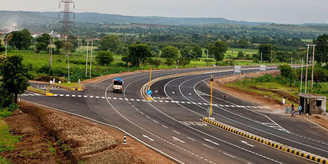

Saoner is said to be mentioned in the Jaimini Ashwamedh under the name of Saraswatpur, and there are many legends connected with it. Ancient Shiv temple also known as Hemadpanti Shiv temple is also located near the bank of Kolar river. Ancient temple of Lord Ganesh is located at the neighboring village of Adasa on a hill. Saoner is also of historic importance due to its role in the 1942 Quit India Movement against the British.
As of 2011 India census,the town of Saoner had a population of 1,50,000. Males constituted 51% of the population and females 49%. Saoner had an average literacy rate of 89%, higher than the national average of 59.5%: male literacy was 89%, and female literacy was 88%. In Saoner, 14% of the population was under 6 years of age.
Saoner has tropical wet and dry climate (Köppen climate classification) with dry conditions prevailing for most of the year. It receives about 163 mm of rainfall in June. The amount of rainfall is increased in July to 294 mm. Gradual decrease of rainfall has been observed from July to August (278 mm) and September (160 mm).[3] The highest recorded daily rainfall was 304 mm on 14 July 1994. Summers are extremely hot, lasting from March to June, with May being the hottest month. Winter lasts from November to January, during which temperatures drop below 10 °C (50 °F). The highest recorded temperature in the city was 48 °C on 19 May 2015, while the lowest was 3.9 °C.
The city of Saoner has a rich Culture in Vidarbha. Co-existence of communal harmony is an excellent example in Saoner, wherein people of all caste come together to celebrate Pola (Festival of Bullocks), Eid, Christmas, Holi and Diwali. Famous Marathi writer Ram Ganesh Gadkari breathed his last here.
Adasa is a historical and ritual place of Hindu. It has a big Ganesh temple. It is 8 km from Saoner.
Dhapewada is the place which is famous for temple of lord Vitthal this place is also known as “Pandharapur of vidarbha” the Rathyatara of Dhapewada is known in whole Maharashtra.
Waki is famous in whole india for the sufi saint Hazarat Baba Tajuddin there are annual fair organised in waki every Hindu Muslim join this fair